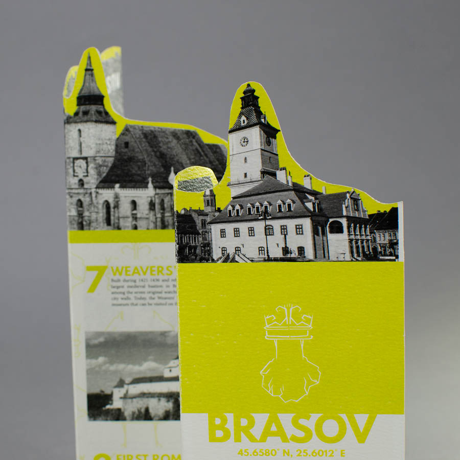
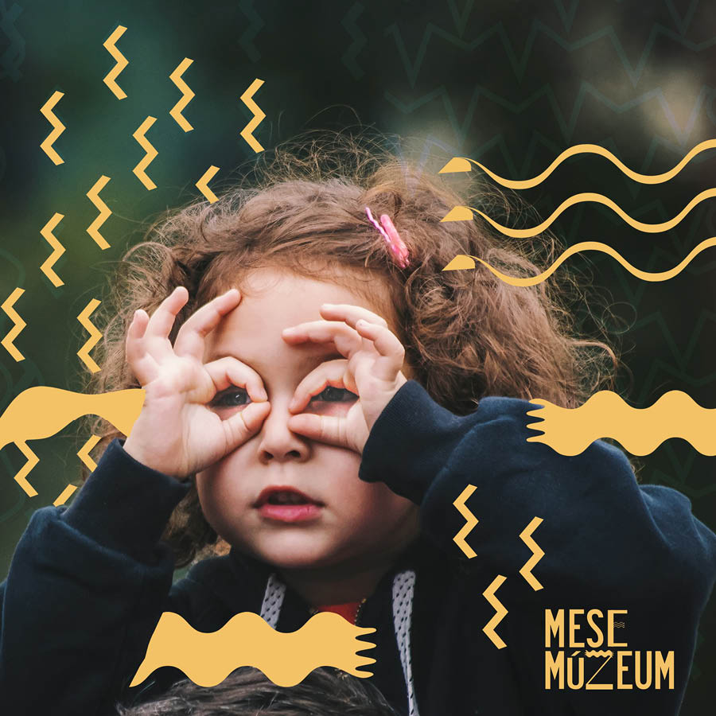
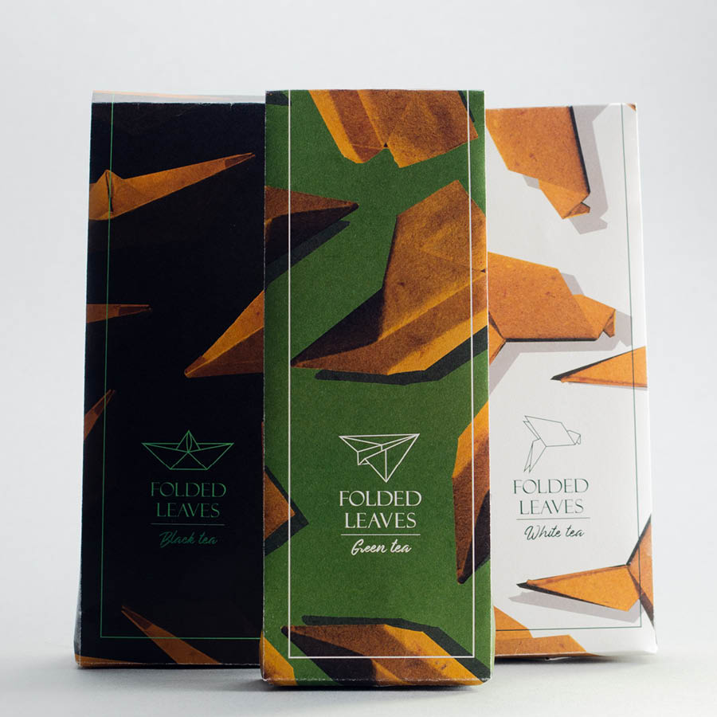

| munkáim | |
|
|

|
||
| Sötöség országa – illusztráció | Lázár Ervin – Öt, hat, hét meseillusztráció | |
| Albumborító- és plakáttervek | ||
|  | ||
| Esemény arculat | Turisztikai útmutató | |

|
||
| Magazinterv | Fűszertár fanzin | |
| Klímapánik eseményarculat | ||
|  | ||
| Mesemúzeum arculatterv | ||
| Lázár Ervin – A csend meseillusztráció | Weöres Sándor: Falusi fiú a városról beszél illusztráció | |
| Ki vagy te? – tyopillusztrácó | Cukrászda arculat | Fekete Péter kártyajáték |
| Fellini 100 bélyegkészlet | Tipográfiai kísérletek | |
| Medvecukor csomagolásterv | Weboldalterv | |
|  | ||
| Kicsengetési kártya | Teacsomagolás | |

|
||
| Vizsgamunka – Ültetési készlet csomagolássorozat | ||

|
||
| NIKE plakátsorozat | NEON Művészeti fesztivál plakátsorozat | |